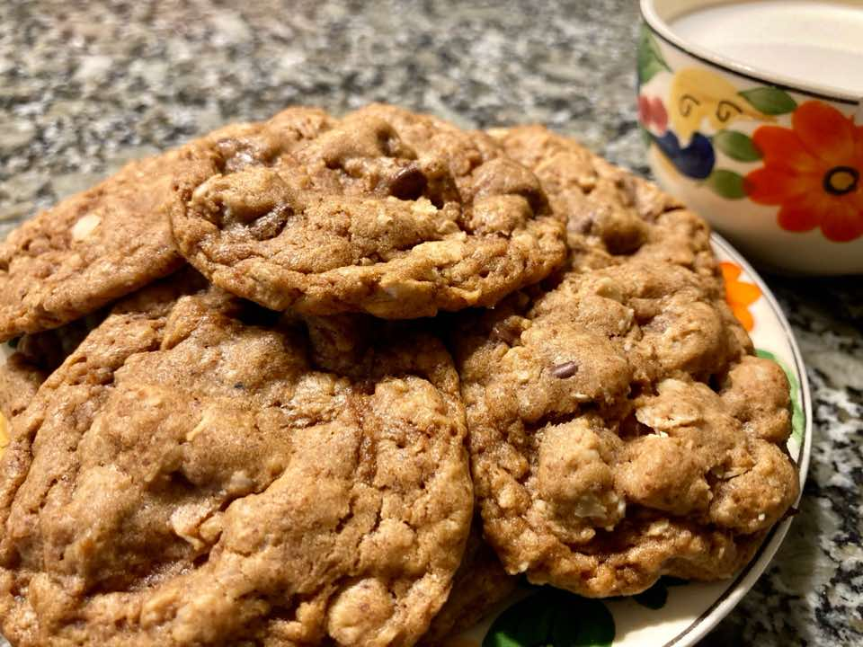

Oatmeal Chip Cookies
DessertChocolate
Servings18 servings
PrepPT20M
CookPT10M

Ingredients
- 1/3 cup coconut oil
- 1 cup sugar ((we use either all or half coconut sugar))
- 1 Tbsp molasses
- 1 egg
- 1 tsp vanilla extract
- 1 cup flour
- 1 cup regular oats
- 1 tsp baking soda
- 1 tsp cinnamon
- 1/2 tsp salt
- 1 cup (6 oz.) semisweet chocolate chips
Directions
- Preheat oven to 350 degrees.
- Cream together oil and sugar. Beat in molasses, egg, and vanilla.
- Combine dry ingredients; add to creamed mixture.
- Stir in chocolate chips.
- Roll into 1-1/2-in. balls. Place 2 in. apart on greased baking sheets.
- Bake for 8-10 mins or until golden.
- Cool 5 mins; remove from pans to wire racks.
Source
https://sageandplow.com/2024/02/14/chewy-temptation-irresistible-oatmeal-chip-cookies/
This page includes Schema.org Recipe structured data for recipe importers.